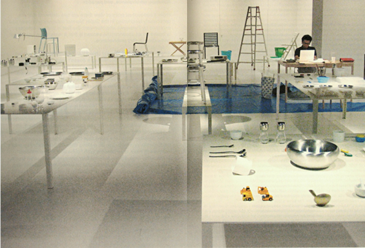

Super Normal
Sensations
of the Ordinary
Naoto Fukasawa and Jasper Morrison
“Super Normal is not a theory. It’s re-realizing something you already knew — re-acknowledging what you naturally thought was good in something.”
— Naoto Fukasawa
“Objects become Super Normal through use rather than design. It’s a long-term discovery of quality — beyond the first visual impression.”
— Jasper Morrison
““Super Normal transcends itself.”
— Silvana Annicchiarico
Explore the Super Normal
Absence, Ambivalence, and Paradox
From a conceptual point of view there are two elements that are particularly fascinating in the Super Normal category proposed and explored by Fukasawa and Morrison: the first is that the category is based on an absence; the second is that it rests on an intentional and extraordinary ambivalence.
Absence: The Super Normal object can be defined by something that is not present. Or something it doesn't have. Style, identity, originality, remarkableness. Anything that can be seen as excellence, or as an unmistakably connotative brand, is incompatible with the status of the Super Normal object. Indeed, its pre-eminent quality consists in the capacity to conceal its features until they become virtually invisible. Ambivalence: however much we dwell on the category proposed by Fukasawa and Morrison, it is very hard to understand, fundamentally, whether Super Normal is an oxymoron (super versus normal) or an absolute superlative (the greatest degree of normality possible, "normality" in its ontological form, its quintessential perfection). The objects selected by Fukasawa and Morrison are, indeed, all oxymoronic and superlative: they push the norm to the boundaries of the possible and at the same time introject a sort of paradoxical coincidentia oppositorum. By making them so "normal" they aren't normal any more, they become both "normal" and "exceptional" at the same time. So exceptional they seem normal. In other words, they are not perceived or perceivable as exceptional. At least, that is, until they are noticed and co-opted by the auctoritas of Morrison and Fukasawa. It is only at this point that the Super Normal object reveals the paradox embedded in its genetic code: at the very instant it is perceived, catalogued, and exhibited as such, Super Normal transcends itself.